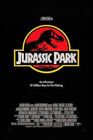

Set 22 years after the events of Jurassic Park, Jurassic World takes place on the same fictional island of Isla Nublar, located off the Pacific coast of Costa Rica. A successful theme park of cloned dinosaurs, dubbed Jurassic World, has operated on the island for years, bringing John Hammond's dream to fruition. The park plunges into chaos when a transgenic dinosaur escapes from its enclosure and goes on a rampage, while a conspiracy orchestrated by the park's staff creates more dangers.
